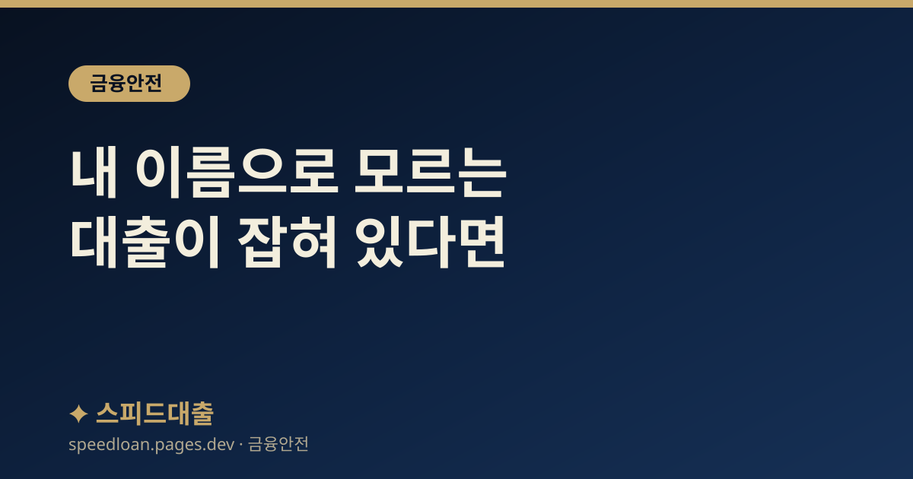

내 이름으로 모르는 대출이 잡혀 있다면 — 명의도용 대출 확인과 대응법
내가 받지 않은 대출이 내 명의로 실행됐다면 시간이 곧 피해 규모입니다. 내 명의 대출을 한 번에 조회하는 법, 발견 즉시 할 일, 갚지 않아도 되는지까지 순서대로 정리했습니다.

내 이름으로 모르는 빚이 생기는 경로
신분증 사진·사본이 유출되거나, 보이스피싱으로 원격제어 앱을 깔았거나, 문서·명의를 넘긴 경우 타인이 내 명의로 대출·카드를 만들 수 있습니다. 특히 비대면 대출이 늘면서 신분증과 인증정보만으로 대출이 실행되는 사례가 있습니다.
명의도용은 발견이 늦을수록 피해가 커집니다. ‘설마’ 싶어도 아래 절차로 지금 바로 확인하는 것이 가장 중요합니다. 유출 정황이 있었다면 대출 빙자 보이스피싱 대처와 함께 보세요.
① 먼저 확인 — 내 명의 대출·계좌 한 번에 조회
내 명의로 어떤 대출·계좌·카드가 있는지 본인이 직접 조회할 수 있습니다. 아래 공식 창구를 이용하세요(모두 본인 인증 후 무료 조회).
- 계좌정보통합관리서비스(어카운트인포) — 내 명의의 모든 은행 계좌·대출·카드 조회
- 한국신용정보원·신용평가사(KCB·NICE) — 내 명의 대출·보증 내역 조회
- 금융결제원·각 금융사 앱 — 최근 개설·실행 내역 확인
모르는 대출·계좌가 보이면 곧바로 다음 단계로 넘어갑니다.
② 발견했다면 즉시 할 일
명의도용이 의심되면 시간을 다투어 신고·정지해야 추가 인출과 2차 피해를 막을 수 있습니다.
- 금융감독원 1332(주간) 또는 경찰 112에 신고하고 사건사고사실확인원을 확보
- 해당 금융사에 즉시 연락해 대출·계좌·카드 지급정지 및 명의도용 접수
- 이미 돈이 빠져나갔다면 ‘지급정지’를 요청해 계좌 동결(피해금 환급 절차의 시작)
통화·접수 일시와 담당자, 접수번호를 기록해 두면 이후 절차에서 증빙이 됩니다.
③ 명의도용 대출은 내가 갚아야 하나
내가 신청하지 않았고 명의가 도용된 것이 확인되면, 원칙적으로 그 채무는 내 책임이 아닙니다. 다만 이를 인정받으려면 도용 사실을 신고·소명하고, 필요하면 ‘채무 부존재’를 다투는 절차가 필요합니다.
혼자 판단하기 어렵다면 금융감독원(1332)·대한법률구조공단(132) 등에서 무료 상담을 받을 수 있습니다. 피해 구제의 전반적 흐름은 대출 사기 피해 대처와 구제도 함께 참고하세요.
④ 추가 피해 막기 — 노출자 등록·명의도용 차단
한 번 유출된 개인정보는 반복 도용될 수 있어, 추가 개설을 막는 예방 장치를 걸어두는 것이 좋습니다.
- 개인정보 노출자 사고예방시스템 등록 — 신규 계좌·대출 개설 시 본인확인을 강화
- 명의도용 방지 서비스(신용평가사) — 신규 대출·카드 개설 차단·알림
- 주민등록증 재발급·분실 신고, 공동인증서·간편인증 재발급
동시에 유출된 비밀번호·인증수단을 모두 바꾸고, 낯선 앱은 삭제하세요(개인정보 요구 주의).
평소에 해둘 예방
- 신분증 사본·사진을 메신저·메일에 저장해두지 않기
- 출처 불명 링크·앱 설치 금지(원격제어 앱 특히 주의)
- 신용평가사 앱에서 ‘내 정보 조회 알림’을 켜 두어 새 대출 조회를 즉시 감지
- 정기적으로 어카운트인포로 내 명의 계좌·대출 점검
평소 알림만 켜 두어도 명의도용을 초기에 잡을 수 있습니다.
이미 연체·추심까지 왔다면
도용 사실을 모르는 사이 연체가 쌓여 추심 연락을 받을 수도 있습니다. 이 경우에도 우선 도용을 신고·소명하는 것이 먼저이며, 정당한 범위를 넘는 추심에는 불법 채권추심 대응법으로 대응할 수 있습니다.
‘일단 갚으라’는 압박에 응하기 전에, 채무가 내 책임인지부터 공식 창구에서 확인하세요. 성급한 상환·합의는 오히려 불리해질 수 있습니다.
정리
명의도용 대출 대응의 순서는 분명합니다 — ① 어카운트인포·신용평가사로 내 명의 대출 조회 → ② 발견 즉시 1332·금융사에 신고·지급정지 → ③ 도용 소명과 채무 부존재 확인 → ④ 노출자 등록으로 추가 피해 차단. 빠를수록 피해가 작고, 성급한 상환보다 공식 확인이 먼저입니다.
자주 묻는 질문
내 명의로 대출이 있는지 어떻게 확인하나요?
계좌정보통합관리서비스(어카운트인포)에서 내 명의의 모든 은행 계좌·대출·카드를 한 번에 조회할 수 있고, 신용평가사(KCB·NICE) 앱에서도 대출·보증 내역을 확인할 수 있습니다. 모두 본인 인증 후 무료로 조회됩니다.
명의가 도용된 대출도 제가 갚아야 하나요?
내가 신청하지 않았고 도용이 확인되면 원칙적으로 내 책임이 아닙니다. 다만 이를 인정받으려면 신고·소명과, 필요 시 채무 부존재를 다투는 절차가 필요합니다. 금융감독원(1332)이나 법률구조공단(132)에서 무료 상담을 받으세요.
명의도용이 의심되면 가장 먼저 뭘 해야 하나요?
시간을 다투는 문제이므로 즉시 금융감독원 1332 또는 경찰에 신고하고, 해당 금융사에 연락해 지급정지와 명의도용 접수를 하세요. 접수 일시·담당자·접수번호를 기록해 두면 이후 절차의 증빙이 됩니다.
추가 도용을 막으려면 어떻게 하나요?
개인정보 노출자 사고예방시스템에 등록하면 신규 계좌·대출 개설 시 본인확인이 강화됩니다. 신용평가사의 명의도용 방지·신규개설 알림 서비스도 함께 이용하고, 유출된 비밀번호·인증수단은 모두 교체하세요.
공식 참고 기관
본 사이트의 콘텐츠는 아래 공공·공식 기관의 공개 자료를 참고하여 작성하며, 구체적인 조건과 최신 제도는 해당 기관에서 직접 확인하시기 바랍니다.
본 사이트는 대출을 직접 제공하거나 중개하지 않으며, 금융상품 가입을 권유하지 않습니다. 모든 정보는 일반적인 참고용이며, 실제 대출 가능 여부, 한도, 금리, 조건은 금융회사 심사와 개인 신용상태에 따라 달라질 수 있습니다.